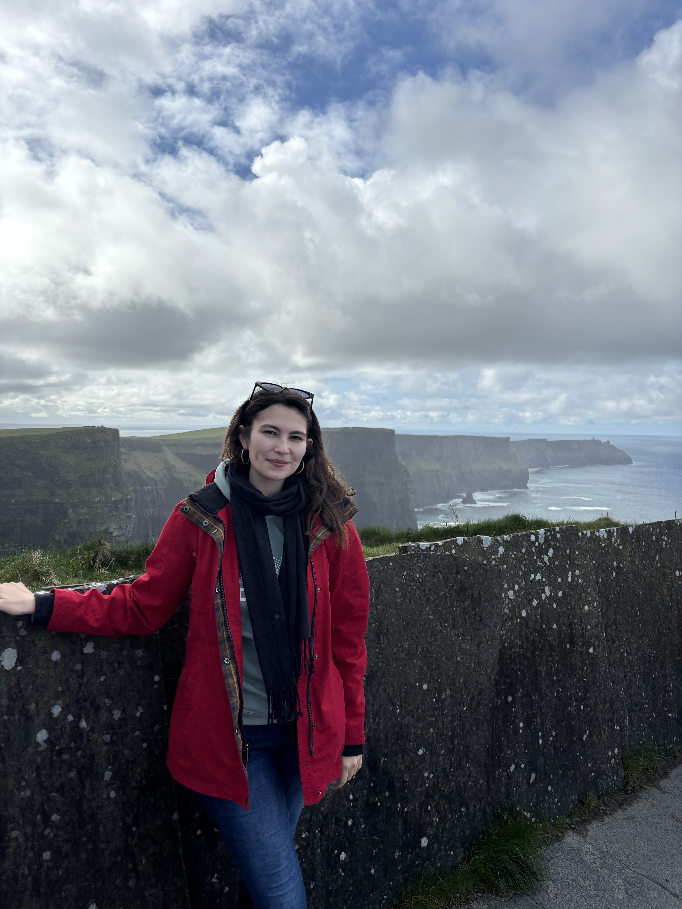
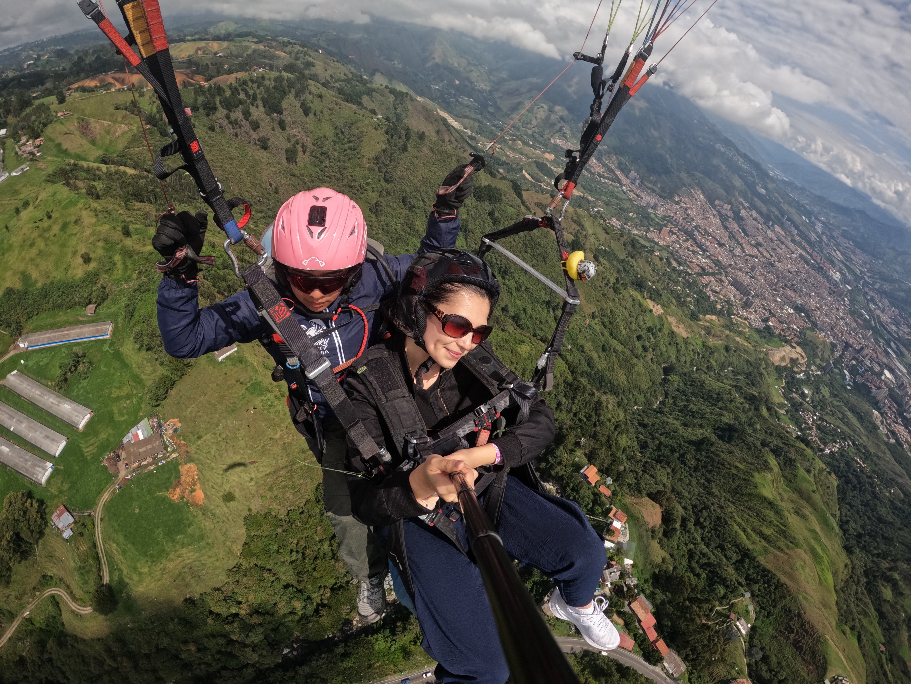
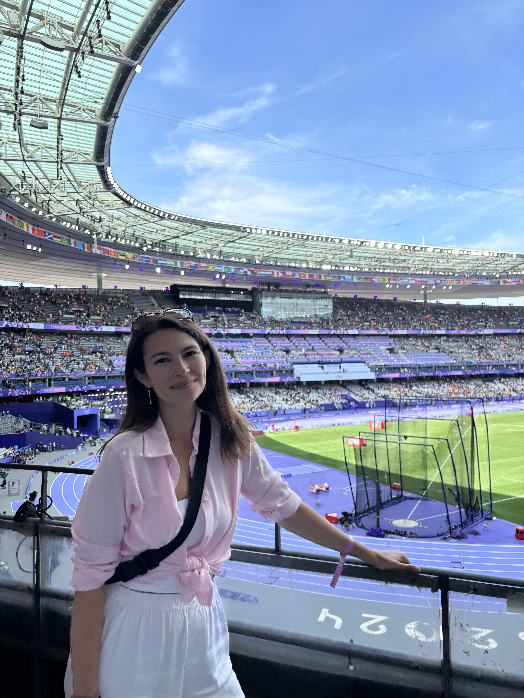
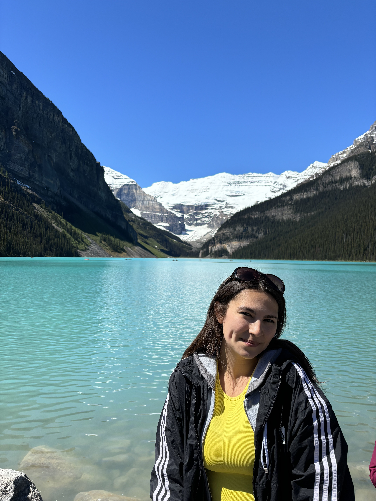

41.8781° N, 87.6298° W — based in Chicago, working from anywhere
Data Scientist and Master of Applied Data Science candidate at the University of Michigan, with a math teacher's instinct for making complicated things click. I build with Python, SQL, and more — and spend my off hours mapping everywhere I've traveled.
Paris

Ireland
Mexico City
detailed itineraries below
Global Travel Tracker
3D interactive globe →
*#GLB240124*
Passport Stamp Log
view collection →
*#PPT220056*
Quantitative Projects
explore models →
*#MADS260930*
Project Icarus
live aurora map →
*#ICR009142*

Medellín, Colombia
The Big House, UMich
Lincoln Park Market, Chicago
Acropolis of Athens
Zaanse Schans, Netherlands
origin point
Before I wrote code for a living, I taught it to teenagers. I spent four years as a high school math and AP Statistics educator, then went back to school myself, pairing an M.Ed. and B.A. in Mathematics with a Master of Applied Data Science at the University of Michigan (3.93 GPA). Today I work as a Data Scientist, building the tools I used to teach my students
My toolkit runs from statistical modeling and machine learning (scikit-learn, XGBoost, PyTorch) to dashboards people actually want to open (Streamlit, Tableau, Power BI), plus a growing interest in retrieval-augmented generation and LLM tooling. I care about clean systems, honest documentation, and explanations that meet people where they are, which is a habit that started at a whiteboard, not a keyboard.
Boarding pass — chapter 1
Aug 2022 — Jun 2026 · Von Steuben Metropolitan Science Center (CPS)
Four years teaching Algebra 1, Geometry, Algebra 2, and AP Statistics — plus coaching cross country. Used assessment data to target interventions, lifting re-test scores by 15%+.
Boarding pass — chapter 2
Jun 2026 — Present · Chicago, IL
Building automated SQL and Python pipelines that cut manual contract classification time by over 90%, and shipping Streamlit dashboards that give leadership a clear read on the data.
4
years in the classroom
3.93
GPA, U-M data science
Python
+ SQL, daily drivers
1
carry-on, always
Academic Background
Marist College
Mathematics
Foundation in rigorous analysis and core disciplinary studies.
DePaul University
Mathematics Education
Honed instructional intuition and methods for making complex topics click.
University of Michigan
Applied Data Science
Advanced computational data science, machine learning, and scalable systems.
Expertise & Stack
four years of ap statistics, rebuilt for the web
A few of the tools I leaned on constantly in the classroom, now interactive. Reshape a Normal curve or a Chi-Square curve with a drag of a slider, or use the built-in Z-score and probability calculator to find P(Z ≤ z) — below, above, or between any two values — instantly. Built with Streamlit and Plotly, embedded live below.
live from the globe
A 3D interactive globe tracking every trip, stop, and route — flights as solid arcs, trains dashed, buses dotted. Spin it, click a marker, and it pulls up the story behind that stop. Built with Streamlit, embedded live below.

Paris, France
Summer Olympics '24

Banff, Canada
Lake Louise
Kenya
Safari
field notes
Every stop on the globe above, grouped by continent. Africa and Asia are next on the calendar — South Africa, Zimbabwe, Botswana, Madagascar, and Thailand are up ahead.
22
countries visited, 5 continents
Map data failed to load — check your connection and refresh.
North & South America — 4
Europe — 15
Africa — 1
Oceania — 2
Asia — 0
— next up, upcoming global expansion
geomagnetic forecast
A Streamlit tool that translates predicted Kp index and time of day into a live auroral oval map, so you know exactly how far south the northern lights might reach tonight. Built with Python, Cartopy, and regression models trained on NOAA/OMNI space weather data — embedded live below.